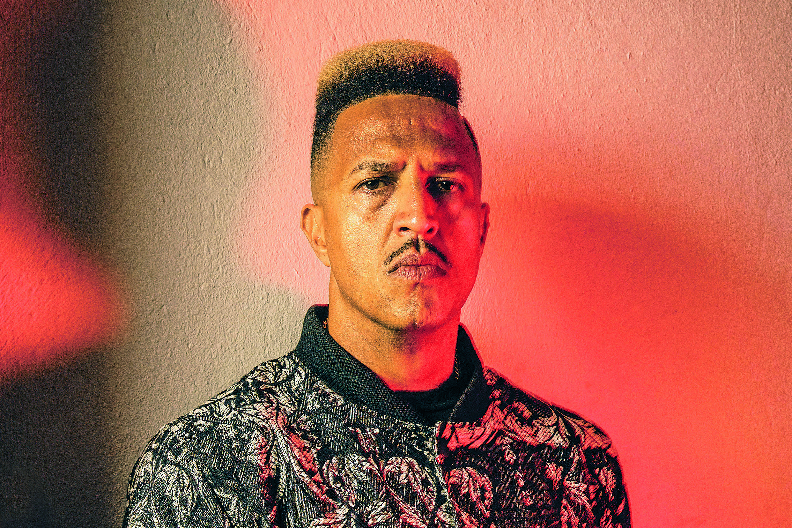
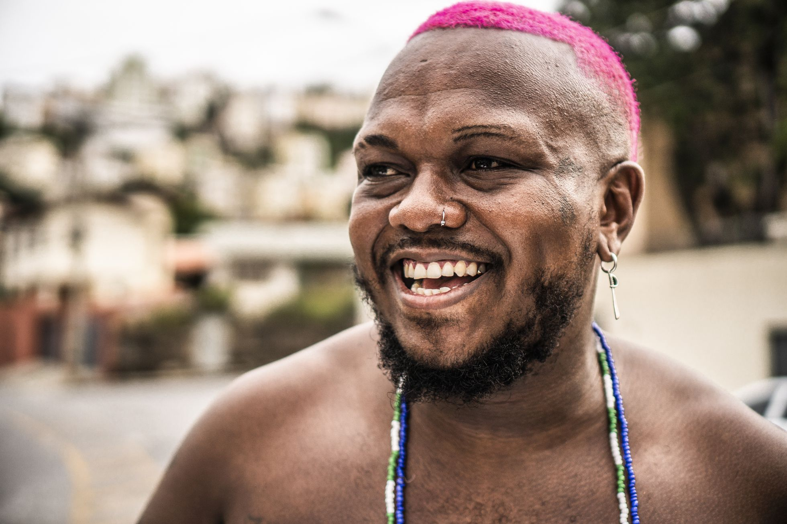
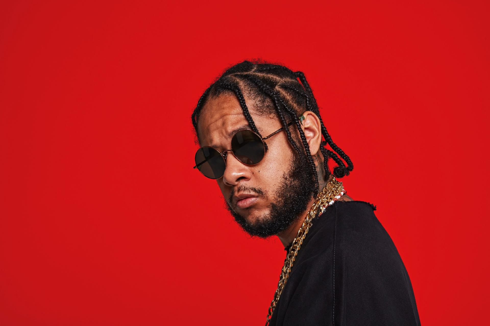
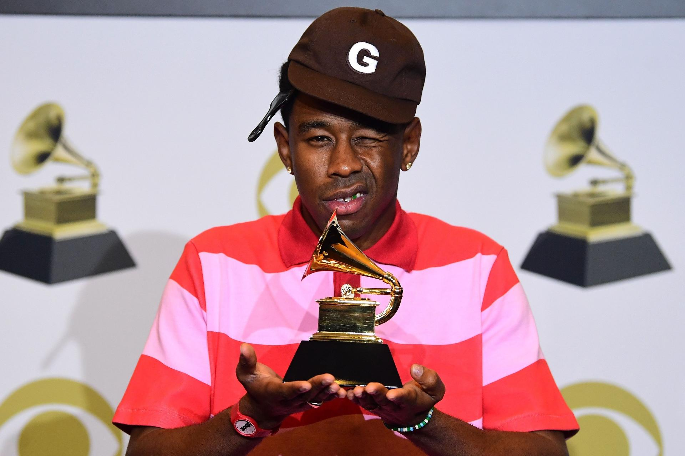

Pedro Paulo Soares Pereira nasceu na cidade de São Paulo em 22 de abril de 1970. Mano Brown é filho de dona Ana, falecida em 16/12/2016, cresceu na periferia da cidade no bairro do Capão Redondo (Parque Santo Antonio), extremo sul de São Paulo.
Mano Brown nunca conheceu seu pai, porém uma publicação revelou que seu pai possuía origens italianas. Quanto a dona Ana, Brown a homenageia em letras suas. Numa delas, em Negro Drama, diz: "Aí, dona Ana, sem palavras, a senhora é uma rainha!".

Djonga nasceu em Belo Horizonte, na Favela do Índio, e cresceu no bairro de São Lucas, Santa Efigênia. Sempre gostou de música e poesia, tendo crescido em uma família muito musical, ouvindo principalmente MPB.
Começou a compor música em 2010 com apenas 16 anos. Sua inspiração veio do funk e do rap nacional, sendo seus primeiros CDs foram do grupo Racionais MCs e de Dogão. “Foi ai que eu comecei a gostar mesmo do ritmo. Além dos raps, tinha os funks proibidões. Depois eu comecei a escutar uns rocks, Cazuza e Barão Vermelho; aí eu vi que queria escrever música", conta o rapper.
Djonga cursou História na Universidade Federal de Ouro Preto até o sétimo período, chegando a quase se formar. No entanto, começou a fazer sucesso como rapper e decidiu seguir a carreira, abandonando a faculdade.

Leandro Roque de Oliveira (São Paulo, 17 de agosto de 1985), mais conhecido pelo nome artístico Emicida, é um rapper, cantor, letrista e compositor brasileiro. É considerado uma das maiores revelações do hip hop do Brasil da década de 2000.
O nome "Emicida" é uma fusão das palavras "MC" e "homicida". Por causa de suas constantes vitórias nas batalhas de improvisação, seus amigos começaram a falar que Leandro era um "assassino", e que "matava" os adversários através das rimas.
Mais tarde, o rapper criou também um acrônimo para o nome: E.M.I.C.I.D.A. (Enquanto Minha Imaginação Compuser Insanidades Domino a Arte). As suas apresentações ao vivo são acompanhadas do DJ Nyack nos instrumentais.
Mauro Mateus dos Santos (São Paulo, 3 de abril de 1973 — São Paulo, 24 de janeiro de 2003), mais conhecido pelo seu nome artístico Sabotage, foi um rapper, cantor, compositor e ator brasileiro.
Mauro, pai de 2 filhos, nasceu na Zona Sul de São Paulo, onde, depois de ter sido assaltante e gerente de tráfico encontrou a saída no rap, entrando na música e percebendo o seu verdadeiro dom. A origem do apelido Sabotage deu-se por estar sempre conseguindo burlar as leis com tremendo êxito, como entrar em bailes, festas e boates sem permissões, e saindo ileso de inúmeras confusões. Considerado uma lenda na Zona Sul, ele inspirou vários rappers, como Rhossi, Pavilhão 9, além de ter ensinado Paulo Miklos como ser um digno malandro, no filme "O Invasor", de Beto Brant, com quem escreveu até uma música.
Sabotage fez um único disco solo, o Rap é Compromisso!, e participou de vários CDs com o RZO, SP Funk e outros. Em 2016, 13 anos após sua morte, o álbum que leva o mesmo nome do cantor foi lançado no serviço de streaming Spotify. Nele estão diversas canções feitas na semana em que o rapper foi assassinado.

Tyler Gregory Okonma, Okonma é conhecido como o líder do Odd Future, e o grupo como um todo tem sido comparado ao influente grupo de hip hop Wu-Tang Clan.Desde o início de sua carreira, Okonma tem músicas, em grande parte produzidas por ele mesmo, para seus projetos e outros membros do Odd Future.
Ao longo dos anos, seu estilo de produção progrediu de sombrio e "barulhento" nos primeiros projetos para uma abordagem mais jazzística e soulful com os álbuns Cherry Bomb, Flower Boy e IGOR.
Seus temas líricos também evoluíram de horrorcore para pontos de vista sobre o amor, a sexualidade, a existência e saudade. Musicalmente, ele foi fortemente influenciado pelo N.E.R.D e pelo membro do The Neptunes, Pharrell Williams.
O álbum solo de Williams, In My Mind, teve um impacto substancial em Okonma, inspirando-o a co-fundar o coletivo Odd Future. Ele também citou o álbum de estreia do NERD In Search of... como um álbum impactante para ele.

Ao site Alma Preta, o rapper Mano Brown, dos Racionais, explicou que se inspirou em textos do ativista antirracista Malcolm X para compor “Voz ativa”. “A letra sou eu conversando com ele no livro, dizendo que aqui no Brasil as coisas estavam do mesmo jeito, mas que agora o negro tinha voz ativa e disposição de lutar”, afirmou.
O americano, assassinado em 1965, foi uma influência chave para a proposta dos Racionais. Malcolm X também foi uma fonte primordial para as ideias do grupo de rap americano Public Enemy, referência importante para os Racionais quando surgiram, em 1988.

Freddie Mercury era um artista nato. De fato, quando ele estava vivo, se os alienígenas pousassem na Terra e pedissem para ver um cantor de rock, você levaria o extraterrestre para um show do Queen.
Em sua nota de suicídio, Kurt Cobain aplaudiu a maneira como Mercury abraçou o papel do vocalista. David Bowie, Georgie Michael e Robbie Williams também expressaram seu agradecimento pela habilidade do palco de Mercury, mas em maneiras menos mórbidas.